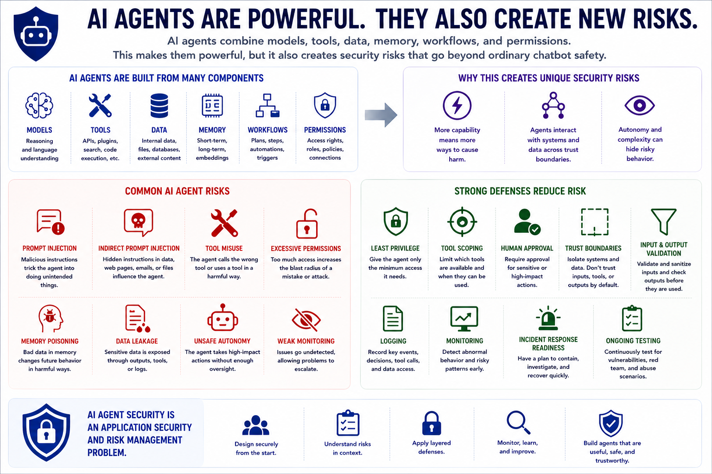

AI Agent Security
Course Summary
Connecting to LMS... Progress: in progress
Version 1.0 | Date: 2026-06-16 | AI agent security guidance evolves quickly. Verify current recommendations against official project, vendor, and security guidance.

Narration
AI agents combine models, tools, data, memory, workflows, and permissions. This makes them powerful, but it also creates security risks that go beyond ordinary chatbot safety.
Agent risks include prompt injection, indirect prompt injection, tool misuse, excessive permissions, memory poisoning, data leakage, unsafe autonomy, and weak monitoring.
Strong defenses include least privilege, tool scoping, human approval for sensitive actions, trust-boundary design, input and output validation, logging, monitoring, incident response readiness, and ongoing testing. AI agent security is an application security and risk management problem.